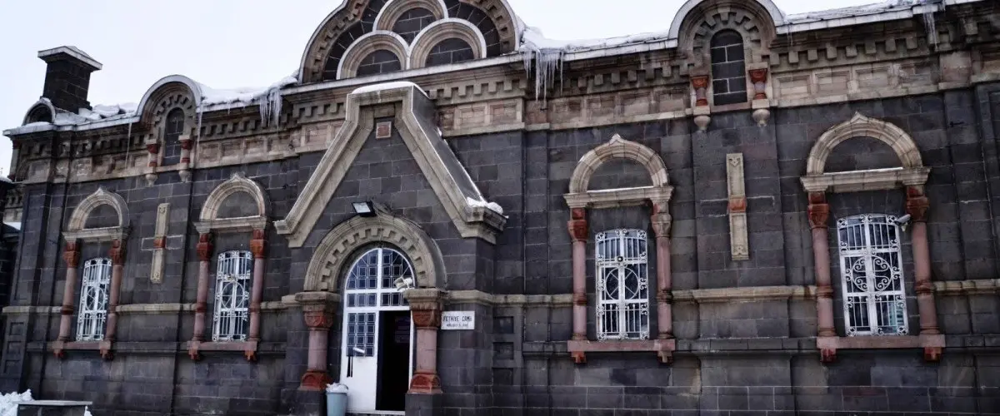
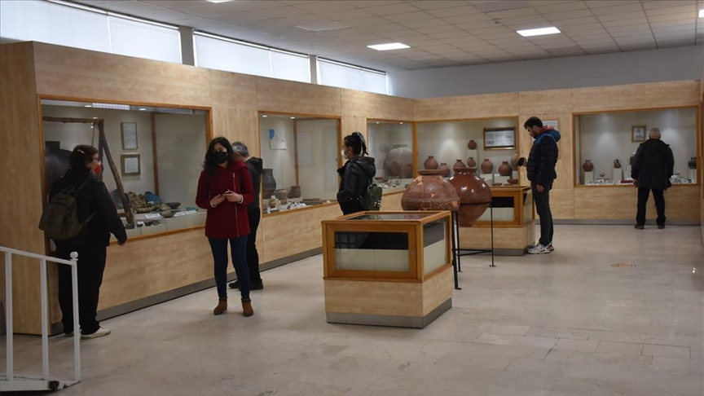
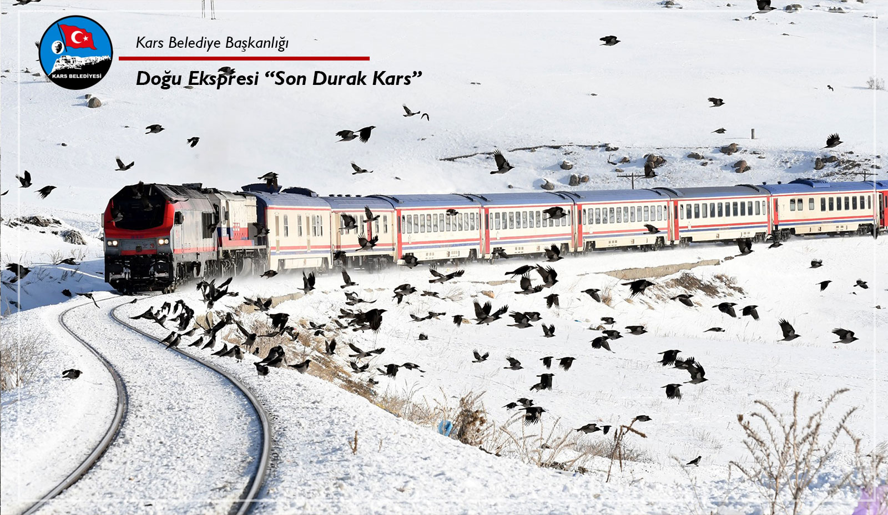
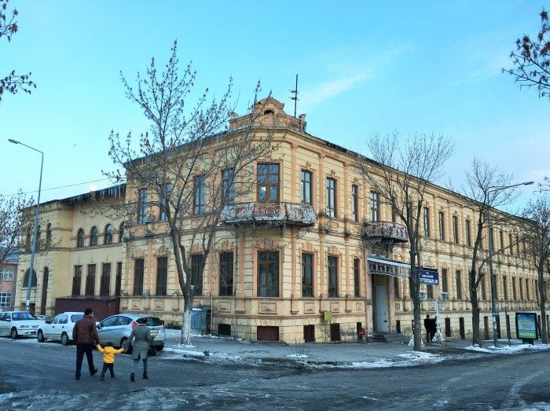

Arkeolojik ve etnografik eserleri barındıran müze, Kars’ın tarihine ışık tutar. Urartu, Roma ve Selçuklu dönemlerine ait eserler sergilenmektedir.
Adres: Merkez/Kars
Ziyaret Saatleri: Her gün 08:00 – 17:00
Giriş: Ücretsiz
Müze Kart: Gerekli değil

Eski Fethiye Camii binasında yer alır. Kafkas kültürüne ait kıyafet, takı, silah gibi günlük yaşam objeleri sergilenmektedir.
Adres: Kaleiçi Mah., Merkez/Kars
Ziyaret Saatleri: Salı–Pazar 09:00 – 17:00
Giriş: Ücretsiz
Müze Kart: Gerekli değil

TCDD’ye ait tarihi Gar binasında yer alan müze, trenlerle ve raylı ulaşım tarihçesiyle ilgilenenler için harika bir durak.
Adres: TCDD Garı, Merkez/Kars
Ziyaret Saatleri: Hafta içi 09:00 – 17:00
Giriş: Ücretsiz
Müze Kart: Gerekli değil

Kars’ın meşhur taş binalarından biri restore edilerek hem sergi hem de bilgilendirme merkezi haline getirilmiştir. Rus dönemine ait mimari izleri tanımak isteyenler için birebir.
Adres: Yusufpaşa Mah., Merkez/Kars
Ziyaret Saatleri: Her gün 10:00 – 18:00
Giriş: Ücretsiz
Müze Kart: Gerekli değil